Mişcări relativ complicate, cum ar fi aruncarea corpurilor pe orizontală, sau pe oblică, pot fi studiate ca fiind compuse
din două mişcări mai simple şi anume o mişcare uniformă pe orizontală şi o mişcare accelerată pe verticală.
Această descompunere a mişcărilor complexe în mişcări simple se bazează pe concluzii experimentale care conduc
la principiul independenţei mişcărilor. Conform acestui principiu, dacă un punct material este supus mai
multor mişcări, atunci atingerea punctului final al traiectoriei nu depinde de faptul că mişcările se execută
concomitent sau într-o ordine oarecare. Posibilitatea compunerii vectorilor deplasare, vectorilor viteză
sau acceleraţie este o consecinţă a acestui principiu.
Aruncarea pe orizontală a corpurilor
Fie un corp, lansat cu viteza iniţială v
0 pe direcţie orizontală, de la înălţimea H.
Mişcarea corpului va fi descompusă în două mişcări ce se desfăşoară simultan, dacă nu ţinem seama de rezistenţa
aerului
- Pe direcţia Ox mişcarea este rectilinie uniformă.
- Pe direcţia Oy mişcarea este uniform accelerată (a=g), sub acţiunea greutăţii (cădere liberă).
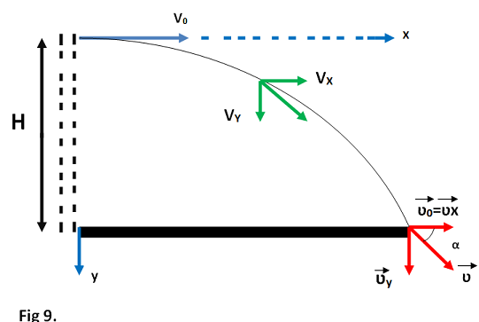
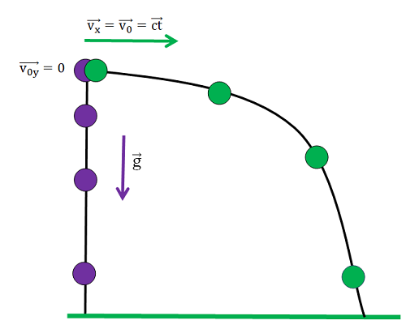
Legile mişcării după Ox si Oy se exprimă conform relaţiilor:
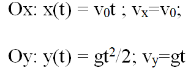
-
Ecuaţia traiectoriei se obţine eliminând timpul t între ecuaţiile x(t) si y(t) şi rezultă
ecuaţia unei parabole:
y(x)=gx
2/(2v
0
2)
-
În momentul când corpul ajunge la sol: y=0, x=b=maxim, se numeşte
bătaie, având expresia:
b=v
0(2H/g)
1/2
-
Timpul de mişcare al corpului se deduce din ecuaţia ordonatei, impunând condiţia ca :
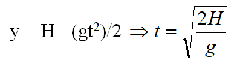
-
Viteza finală cu care corpul ajunge la sol are două componente:
- Ox: componenta orizontală egală cu viteza de lansare v
x = v
0
- Oy: componenta verticală datorată câmpului gravitaţional
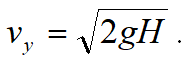
-
Viteza de cădere (viteza finală) se poate calcula astfel:
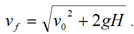
- Unghiul sub care se face căderea corpului depinde de viteza de lansare şi de înălţimea (H)de la care
este lansat corpul:
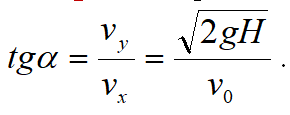
► Observaţie: Studiul mişcării unui electron/ion care se deplasează cu viteza v0, paralelă cu plăcile unui condensator
între care există un câmp electric E=Ud, se poate aborda în acelaşi mod cu aruncarea pe orizontală. Acceleraţia
gravitaţională g este înlocuită cu a=eE/m, unde e este sarcina electrică şi m este masa particulei considerate.
Studiul devierii în câmp electric permite determinarea sarcinii specifice e/m.
Auncarea pe oblică a corpurilor
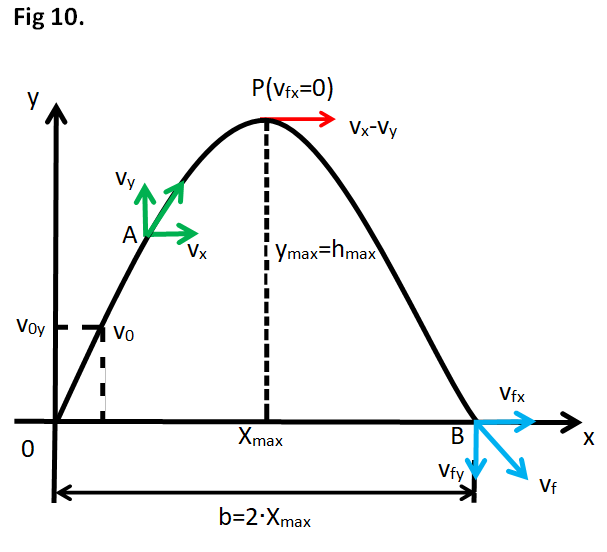
Considerăm un corp lansat cu viteza iniţială v
0 care formează unghiul α cu direcţia orizontală (suprafaţa Pământului).
Mişcarea corpului are loc in planul xOy si va fi descompusă în două mişcări care se desfăşoară simultan:
-
Pe direcţia Ox mişcarea este rectilinie uniformă cu viteza iniţială v
0x = v
0cosα = ct
-
Pe direcţia Oy mişcarea este uniform încetinită cu viteza iniţială v
0y = v
0sinα
Ecuaţiile parametrice ale mişcării (coordonatele mobilului la momentul t) sunt:
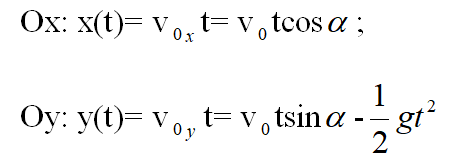
Proiecţiile vitezei la momentul t sunt:
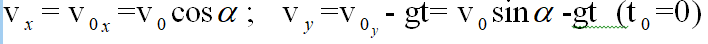
Ecuaţia traiectoriei se obţine eliminând timpul t între ecuaţiile parametrice ale mişcării:
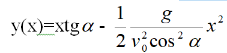
Relaţia este de forma:y(x) = bx-ax
2unde a şi b sunt două constante, deci
traiectoria mobilului este un arc de parabolă cu concavitatea în jos (a
<0).
Menţionăm că nu s-a ţinut seama de frecarea cu aerul. În cazul când se ţine seama de frecare, traiectoria are aspectul unei
curbe, purtând denumirea de curbă balistică.
Înălţimea maximă se obţine impunând condiţia de oprire (v
f) în formula lui Galilei:
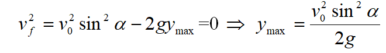
Timpul necesar atingerii înalţimii maxime se obţine impunând condiţia de oprire (v
f) în legea vitezei după Oy:
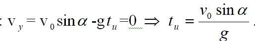
Timpul total de deplasare va fi:
t=2t
u
Bătaia (distanţa maximă străbătută pe orizontală) are expresia:
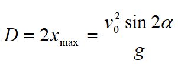